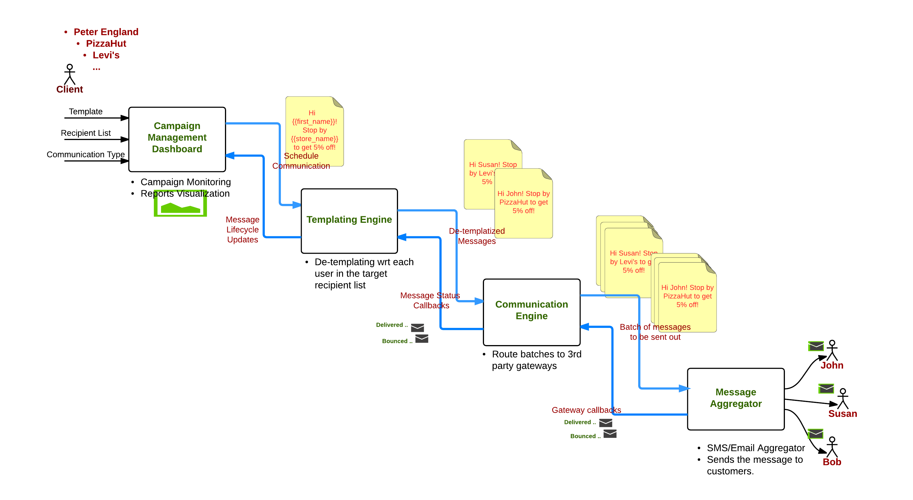

Work
2012-Present
OS : *nix Based OS
Databases : MySQL , MongoDB, ElasticSearch, Redis
Languages : Python, Java , PHP
Web : HTML ,Javascript, D3.js, CSS , jQuery
Misc : Apache Thrift , RabbitMQ , Zookeeper , Nginx , Jenkins
Role : Server Engineer in iCloud.
Projects : Find My iPhone, Find My Friends

Apple
Software DeveloperSept 2016 - Present
Role :Intern for QA team
Projects : Quality Metrics Dashboard
Technologies used : Python , MySQL , Power BI, Express.js, Angular.js, Node
Dashboard to gain insights about the progress of test automations, stats on job failures and even tracking of story point completions
for each sprint.
Data Source - I created scheduled jobs to collate data from
Jira and Zephyr which tracked the stories and associated automated
tests respectively. This was stored in MySQL.
Views :
Power BI - Using Microsoft's Power BI, I created three dashboards.
-
Test Metrics Dashboard : The graphs in this dashboard helped
answer questions like "How many smoke tests failed last night?",
"What percent of tests have been automated vs how many are
still being run manually ?" , "How many tests have been
created per release ? " and various others. -
Defects Metrics Dashboard : The charts in this dashboard measured
the counts and types of defects being filed against each of their
internal products. They helped in visualizing trends such as
" The number of defects being filed vs the number being resolved ",
" The number of defects being reopened after resolution ",
a break-up of "all the defects filed on each day by the products"
and various others. -
Velocity Dashboard : This dashboard visualised the number of story
points that were still open at the start of every day vs the number
that were resolved. These graphs were further divided by the number
of story points that were added at the start of the sprint i.e. that
were planned, vs the number that were added during the sprint i.e
unplanned. This dashboard helped the Program Management team in tailoring the
number of tasks planned for a sprint for each engineering team, based
on their past sprint velocities.
which made it easy to access build information for the automation suites.
{kind=link}
{kind=link}
{kind=link}
{kind=link}
Skyhigh Networks
InternMay - August 2016
Projects : Subscription Service, Bulk Messaging Module, Campaign Shard Service,
Filter Service and others
Subscription Service : Led a team in building a module which manages subscriptions of users
with retail organizations. This module was a complete rehaul of the old
subscription service that was in place, bringing in a more centralized
end point. This also allowed 10 - 15 of the inhouse services to use the
module using exposed APIs.
Tech used : Java , PHP , MySQL , Redis ( as a cache ) , Thrift
Bulk Messaging Module :
The module completely implemented Publisher-Subscriber model in order to
send out promotions and offers, on behalf of our clients to their customers,
most often in the orders of millions. Due this high scale, the module had to
be available and reliable at all times, as well as mention scalable and
maintainable. More info on this project can be found here : MySQL as a Queue - Antipattern Case Study
 Tech used : Java , PHP , MySQL , RabbitMQ , Thrift
{kind=link}
Campaign Shard Service :
Created a service that had to manage basic information of customers which
numbered in the order of 10s of millions. A sharding policy was put in place,
which enabled us to handle such large data without running into any memory
issues by distributing the load across several different databases.
Tech used : Java , PHP , MySQL , Thrift
Filter Service :
Created a service which helped in filtering out customers, in the order of tens
of millions into groups of thousands, based on various filtering criteria.
This helped our clients in creating more targeted groups based on KPIs like
Avg. Bill Amount, Lifetime purchases etc. Overall more than 50 KPIs have been
supported by this service.
Tech used : Java , PHP , MySQL , Thrift
Capillary Technologies
Senior Software DeveloperJune 2012 - Oct 2014
{kind=link}
{kind=link}
{kind=link}